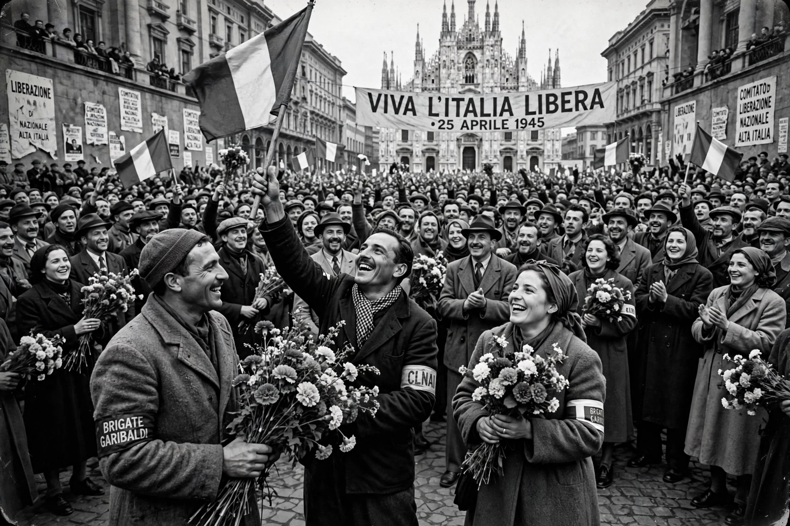

| Observed by | Italy |
|---|---|
| Date | 25 April |
| Significance | End of Nazi occupation and the Fascist regime in Italy (1945) |
Liberation Day (Italian: Festa della Liberazione), also known as the Anniversary of Italy's Liberation, is a national public holiday in Italy commemorating the victory of the Italian resistance movement against Nazi Germany and the collaborationist Italian Social Republic during the final phase of the Second World War.
On 25 April 1945, the National Liberation Committee of Upper Italy (CLNAI) proclaimed a general insurrection in the German-occupied territories of northern Italy; partisan forces liberated Milan and Turin, and Mussolini was captured and executed days later, on 28 April. German forces in Italy surrendered effective 2 May.
The date was chosen by convention and first celebrated in 1946; it was made a permanent national holiday in 1949. It is marked by official ceremonies, including the President of the Republic laying a wreath at the Tomb of the Unknown Soldier in Rome, and by public marches; the partisan song "Bella ciao" is strongly associated with the day.
Italian resistance movement · Italian Civil War · Benito Mussolini